Copertine · mesh-italia
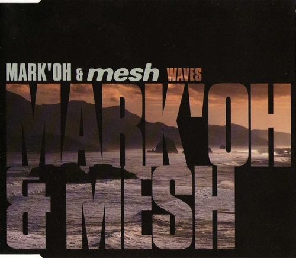
Mark 'Oh & Mesh ·
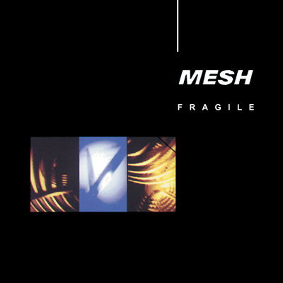
1994 Fragile (EP) · 1994
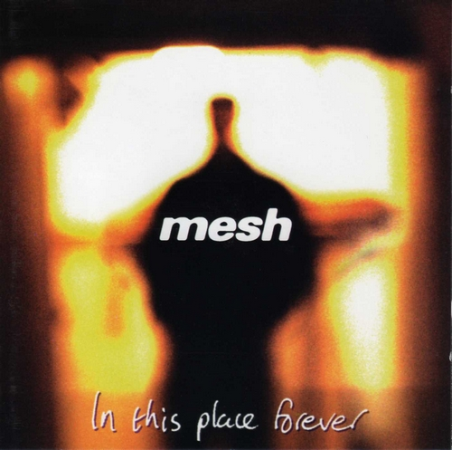
1996 In This Place Forever · 1996
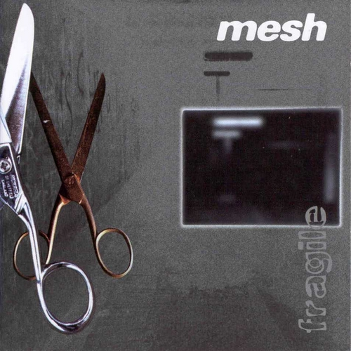
1997 Fragile (Extended)(EP) · 1997
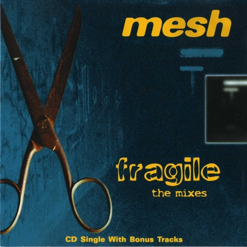
1997 Fragile The Mixes (MCD) · 1997
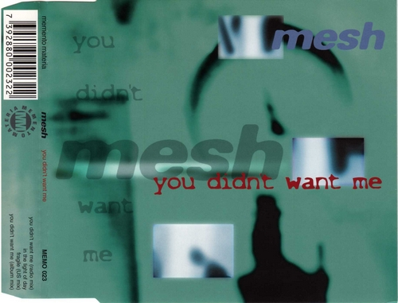
1997 You Didn't Want Me (MCD) · 1997
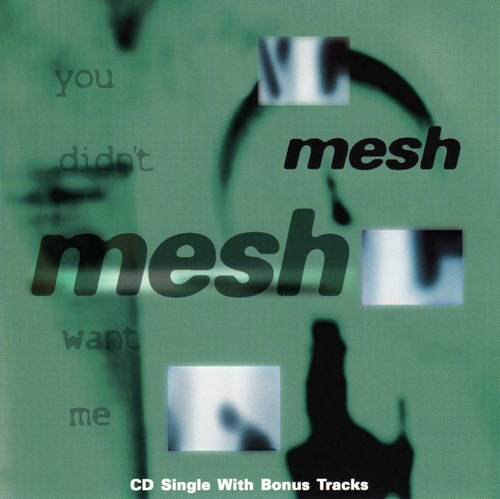
1997 You Didn't Want Me (US)(MCD) · 1997
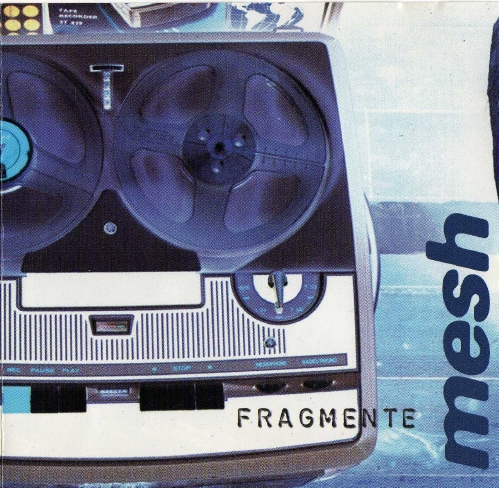
1998 Fragmente · 1998
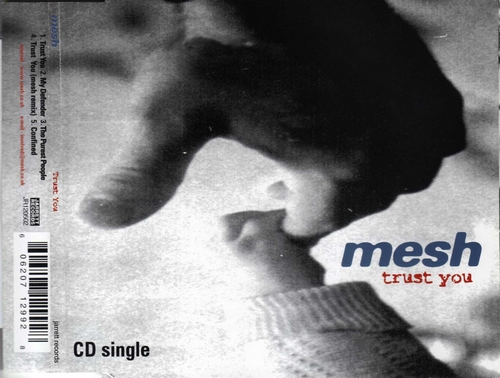
1998 Trust You (MCD) · 1998
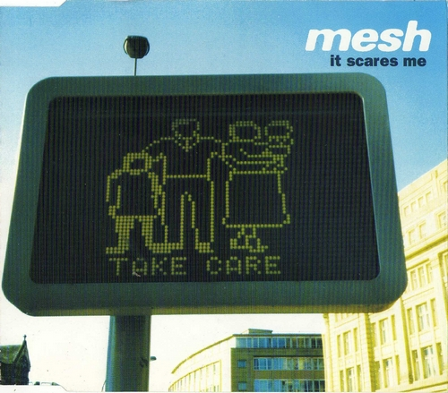
1999 It Scares Me (MCD) · 1999
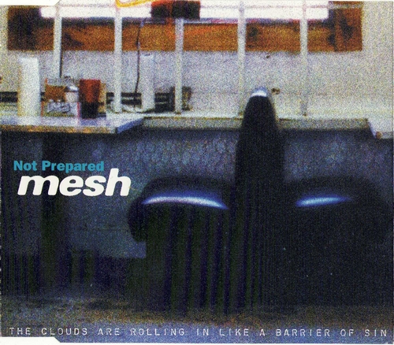
1999 Not Prepared (MCD) · 1999
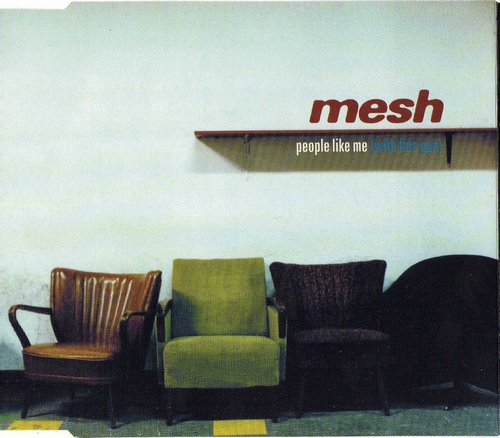
1999 People Like Me (With This Gun) (MCD) · 1999
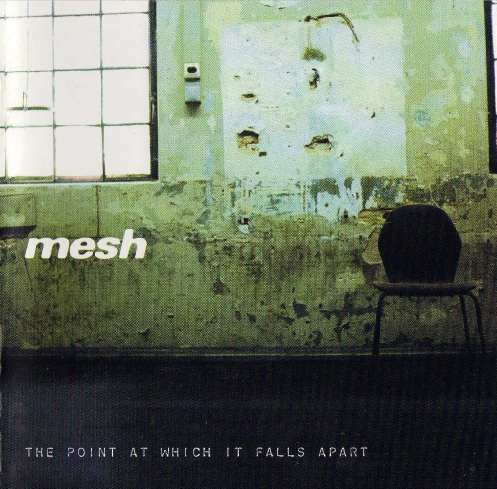
1999 The Point At Which It Falls Apart · 1999
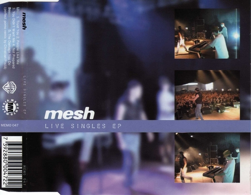
2000 Live Singles (EP) · 2000
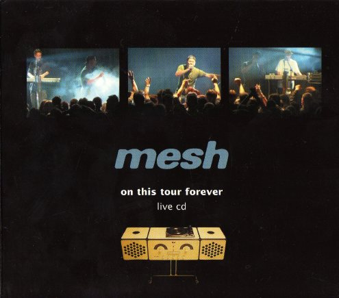
2000 On This Tour Forever (Live CD) · 2000
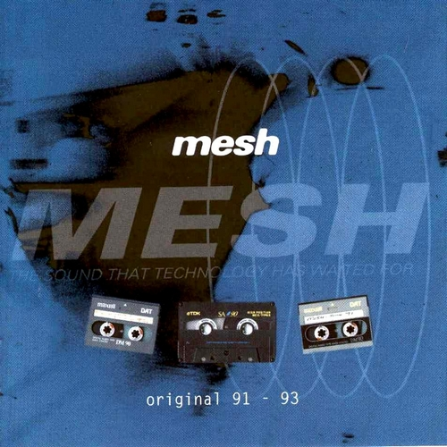
2000 Original 91-93 (Limited Edition) · 2000
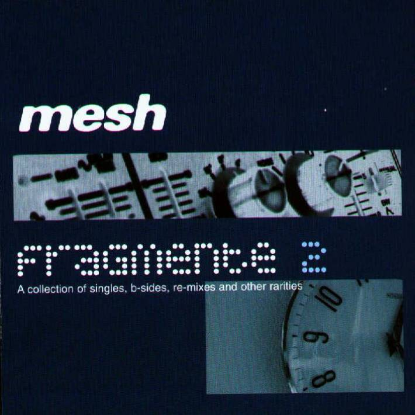
2002 Fragmente 2 · 2002
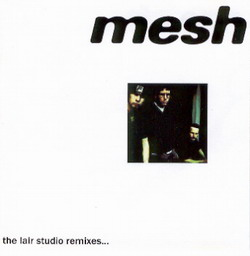
2002 Lair Studio Remixes · 2002
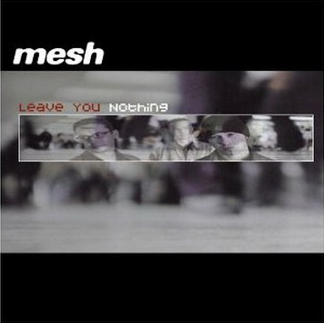
2002 Leave You Nothing (MCD) · 2002
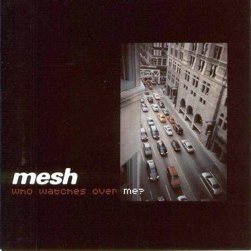
2002 Who Watches Over Me · 2002
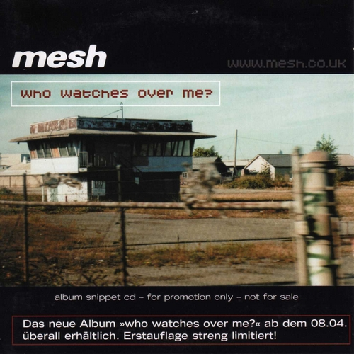
2002 Who Watches Over Me (Promo Snippet CD) · 2002
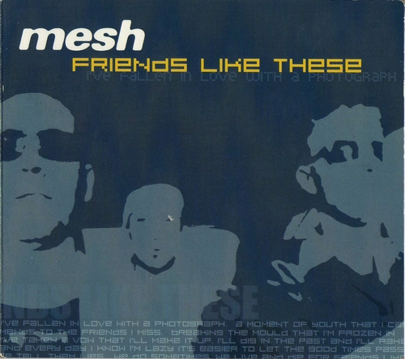
2003 Friends Like These (MCD) · 2003
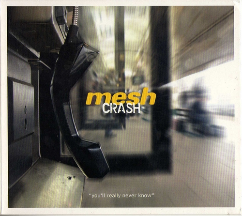
2006 Crash (MCD) · 2006
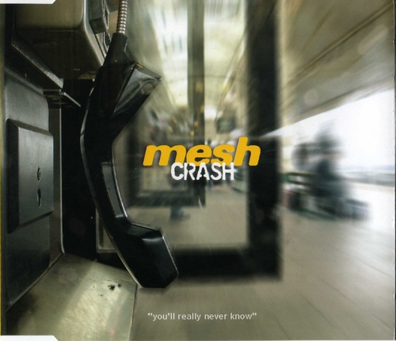
2006 Crash (Promo MCD) · 2006